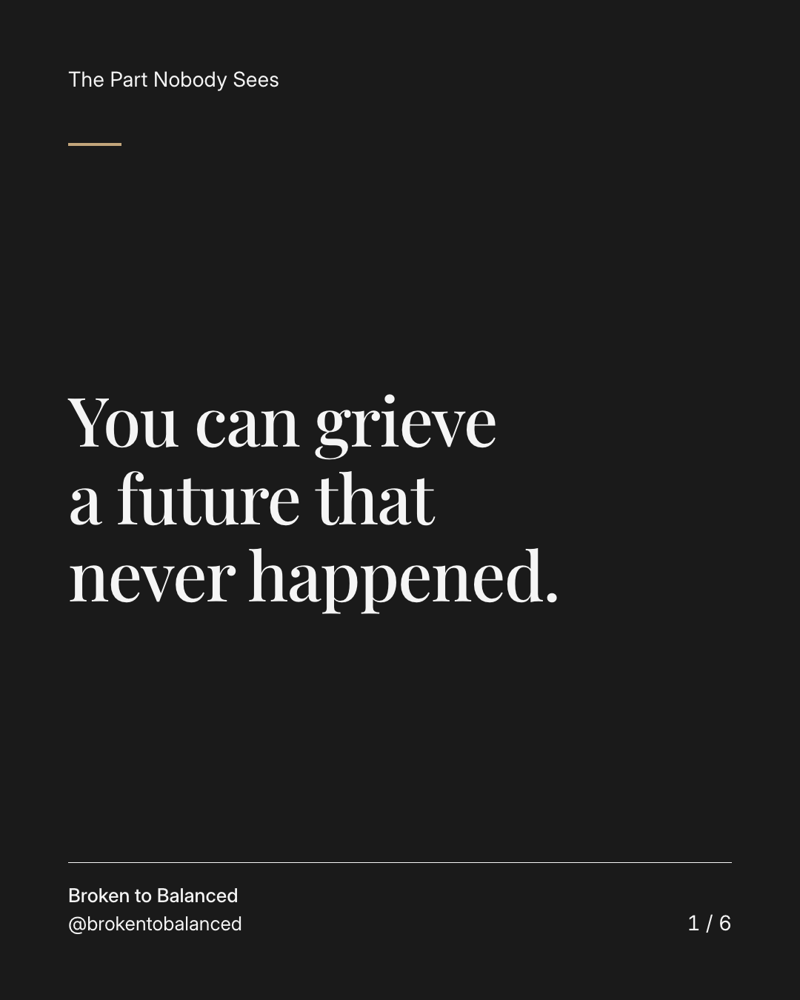
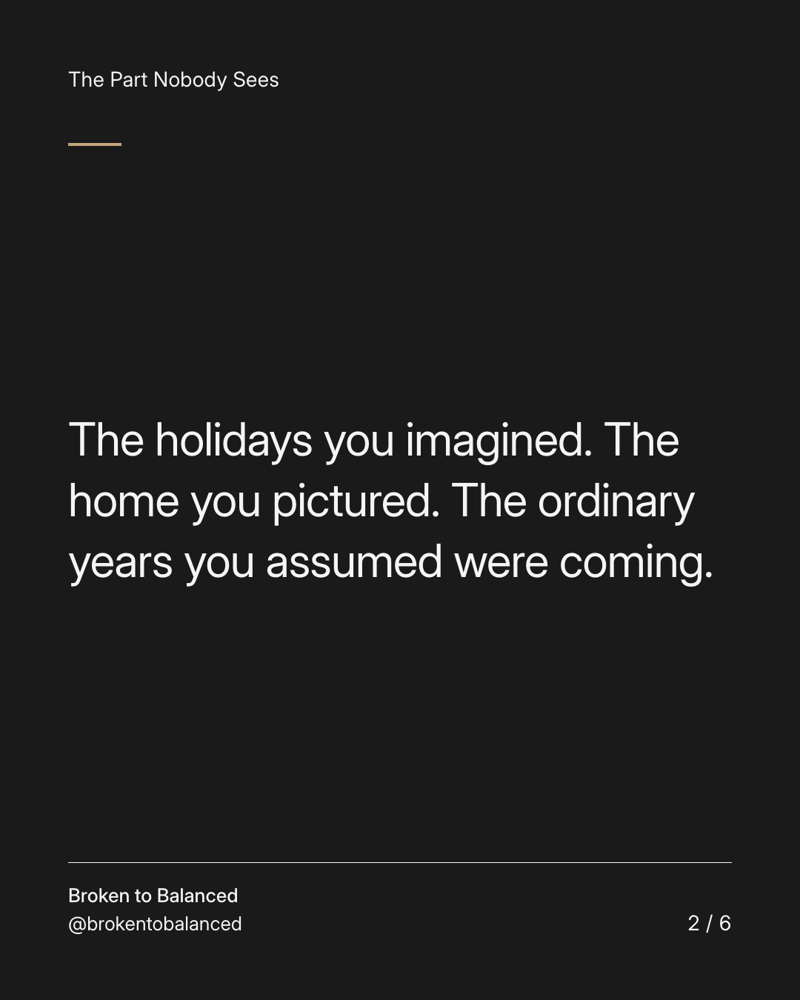
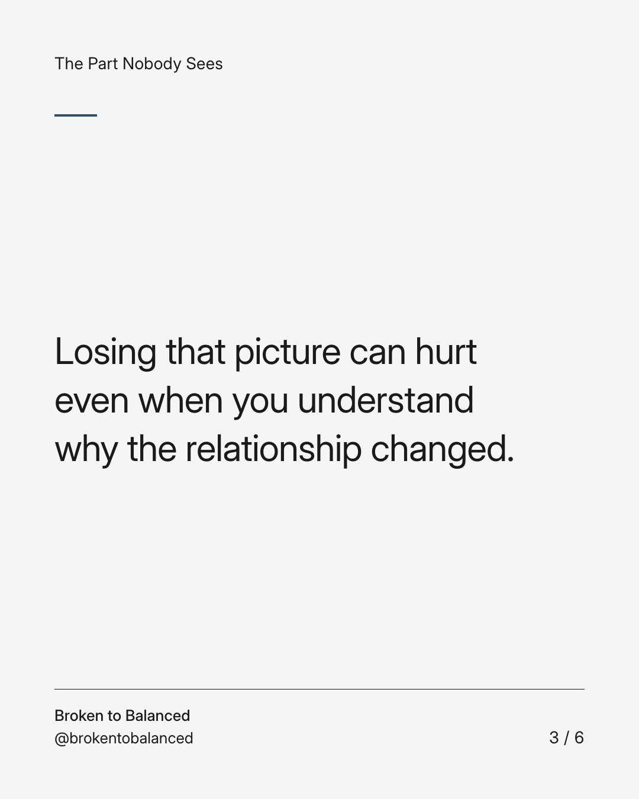
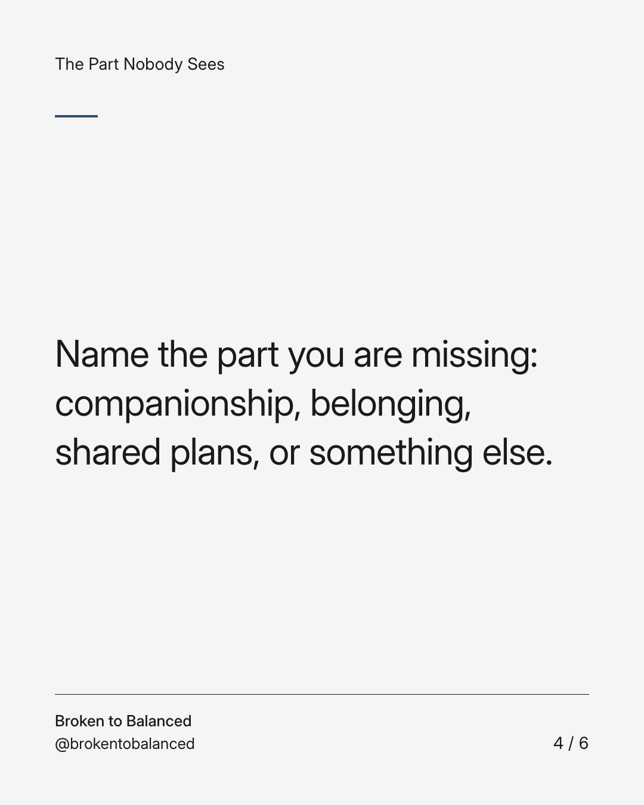
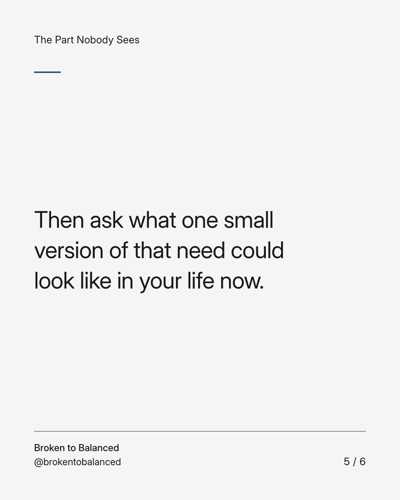
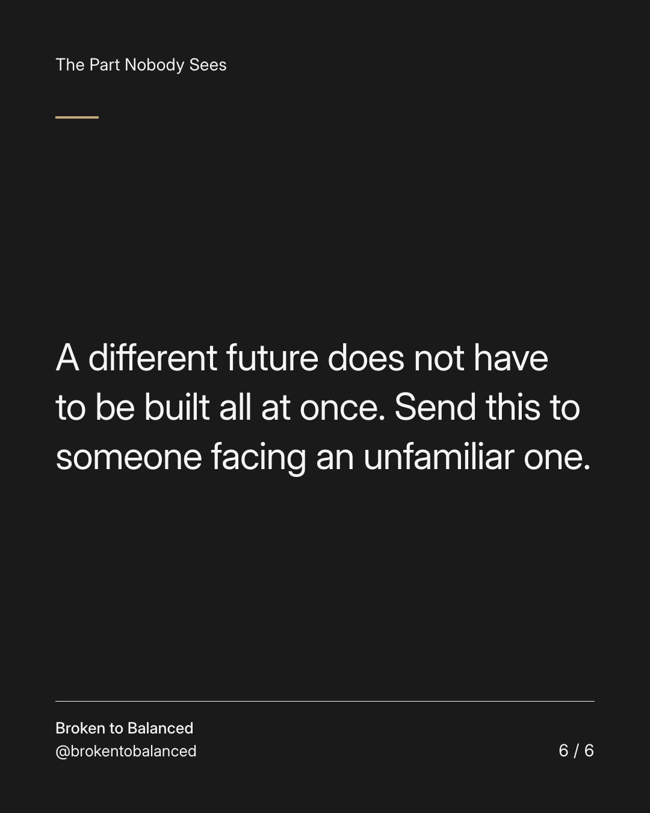

Exact text and accessibility text
You can grieve a future that never happened.
Slide 1 of 6. You can grieve a future that never happened.


Exact text and accessibility text
The holidays you imagined. The home you pictured. The ordinary years you assumed were coming.
Slide 2 of 6. The holidays you imagined. The home you pictured. The ordinary years you assumed were coming.


Exact text and accessibility text
Losing that picture can hurt even when you understand why the relationship changed.
Slide 3 of 6. Losing that picture can hurt even when you understand why the relationship changed.


Exact text and accessibility text
Name the part you are missing: companionship, belonging, shared plans, or something else.
Slide 4 of 6. Name the part you are missing: companionship, belonging, shared plans, or something else.


Exact text and accessibility text
Then ask what one small version of that need could look like in your life now.
Slide 5 of 6. Then ask what one small version of that need could look like in your life now.


Exact text and accessibility text
A different future does not have to be built all at once. Send this to someone facing an unfamiliar one.
Slide 6 of 6. A different future does not have to be built all at once. Send this to someone facing an unfamiliar one.
Exact caption
Plain-text fallback: select and copy the caption.